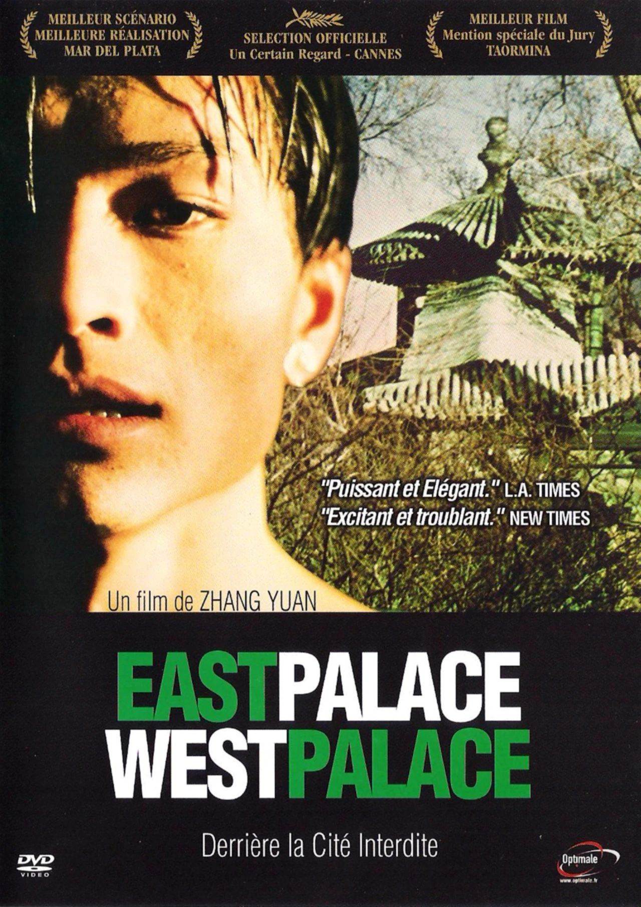
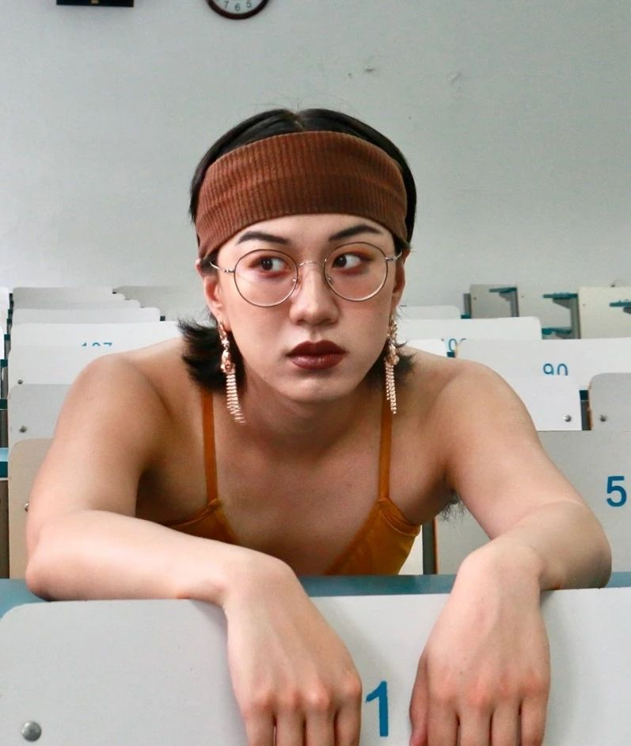

电影《东宫·西宫》常常被公推为中国大陆酷儿电影史的开端，受到文化批评家、酷儿学者和大批性少数观众的关注。它幽暗的意象和充满幻想色彩的镜头语言，很大程度上继承了原著《似水柔情》的文学风格。《似水柔情》是王小波在1993年创作的电影剧本，后来又发展为他的中篇小说。这个故事发生在一个夹缝中的年代，此时的中国已经进入后社会主义转型时期，对性的管控的相对放松让夜色下的公园成为男同性恋探索欲望的场所。同时，警察的盘问、流氓罪的存在又让被抓捕的危险如影随形，与警察之间的“猫鼠游戏”成为同性恋日常生活的一部分。正是在这样的背景下，阿兰和警察小史的生命在一场审讯中紧密地缠绕在一起。

图 | 东宫西东电影海报
在这样的一个性少数身份政治尚未占据主流的时代，阿兰在审讯中反客为主的姿态和对自己“贱人”身份的拥抱，与酷儿政治的策略呈现出惊人的相似，但他横跨两个时代的生命史、梦呓般出现的童年意象以及故事中女贼与衙役之间的王朝权力罗曼史的反复闪回，反映出的则是王小波基于自己的生活经验所给出的乌托邦想象。这给如今已经习惯性告别那个“同性恋前史”[1]的我们带来了一种新的“欲望政治”[2]的灵感。如果以当代同志运动中对男同志的“科学认识”来臧否王小波对于阿兰形象的刻画，那么王小波的作品显然是不合格的——他给阿兰这个“男同性恋”角色赋予阴柔气质，并且在描写阿兰和小史的关系时，援引了一套异性恋式的二元关系模型，而这些显然与主流同志运动的方向呈现出某种断裂——王小波没有遵循性别和性倾向分离的原则，也无法融入男同志反对阴柔刻板印象的努力。以当代的眼光来审视阿兰，我们很容易产生这样的疑惑——王小波为什么要刻画这样一个男同性恋形象？这是否折射出他对男同性恋群体的刻板印象？阿兰究竟以什么面目出现在叙事中？他是顺性别男同性恋还是跨性别女异性恋？他对于女贼的自我认同投射又折射出什么？但是，在王小波的小说中，欲望并不以一套固定的身份和角色出场。他没有呈现出一个清晰的、基于性别和性倾向的分类图谱，而是邀请我们进入一个复杂的、充满矛盾的欲望迷宫，并召唤出我们心中被分类所遮蔽的欲望，这正是这篇小说的魅力所在。我们想邀请你一起进入《似水柔情》的历史文本空间，共同体会这种暧昧与复杂的阅读感受。尾注
[1] 我在这里用“同性恋前史”指代那个身份政治尚未成为同性恋现身和自我表达的主流方式的时代。在对同性恋历史的断代中，那些处于历史夹缝中的身份和欲望往往因为不够“现代”而被归进“史前史”，如同史前史往往只有史实的基本罗列而无法引起当下人的共同情感经验一样，同性恋前史也是一个鬼魅一般模糊不清的、无法被认识因而也无法被讲述的时代。[2] 在这里，我用“欲望政治”来表达政治与欲望互相进入彼此、二者进行密切互动的方式。不同于当下基于权利范式的性少数模型，《似水柔情》勾勒的欲望与政治之关系体现了一种另类可能。
活动时间
6月7日 周日 19:00-21:00
报名方式
点击阅读原文或扫描下方二维码填写报名表。小助手将会根据报名表的填写情况，联系入选的参与者进入活动群。
*本期读书会将进行改版，为保证场内质量，我们将根据问卷评估参与者的意愿，将人数限制在10-15人左右。
主持人
小丸嘤

点击下方链接
查看往期小丸嘤主持的读书会活动
Margot Weiss. Techniques of Pleasure: BDSM and the Circuits of Sexuality.
Amin Ghaziani. The Paradox of Infighting: Conflict and Culture in Lesbian and Gay Marches on Washington.
Zheng WANG. Finding Women in The State: A Socialist Feminist Revolution in The People Republic of China, 1949-1964.
Eric Plemons. The Look of a Woman：Facial Feminization Surgery and the Aims of Trans-Medicine.